Text by: Jian Shuo Wang |
Photographs by: Jian Shuo Wang
Tip: Mouse over each picture to see description.
Look at the Mount. Xiannairi, shining under the sun with drop of blue skies. Standing 6,032 meters above sea level, it is one of the three holy mountains in Yading. It looks like a fairy land. Taken from Luorong Cattle Field.

Lying wood in the Lake Pearl. Check the color of the water - it is like a jade. Yading is featured by its snow mountains and mysterious Tibetan culture, but the waters are also among the best I have ever seen.

[Download wallpaper
version (1280x960) for this picture]
Woodland near the river. The trees has different colors and the water is crystal clear. I seems no body has never been there. Taken near Chonggu Temple in Yading.
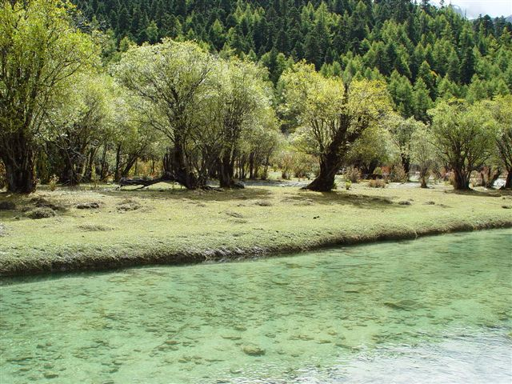
[Similar Photos]

Looking up to the Mount. Xiannairi, with trees of various color and Lake Pearl in foreground. No body has never been to the top of the mountain yet.

[Download
wallpaper version (1280x960) for this picture]
[Similar Photos]

Xiannairi, the holy mountain. It is so near. Looking from the Lake Pearl.

[Download wallpaper version
(1280x960) for this picture]
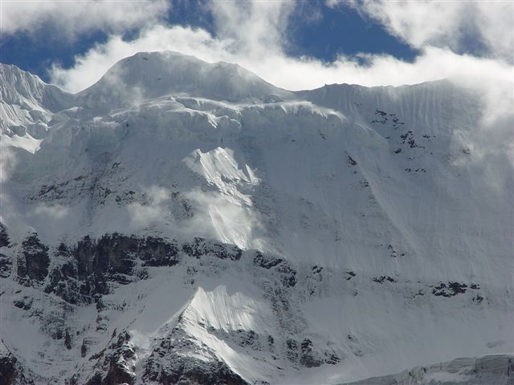
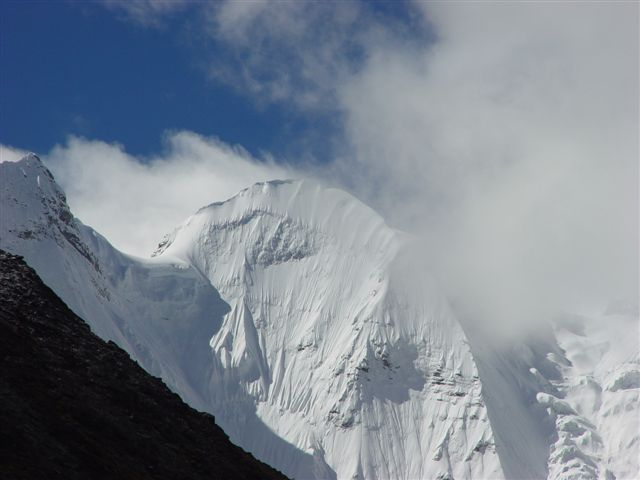
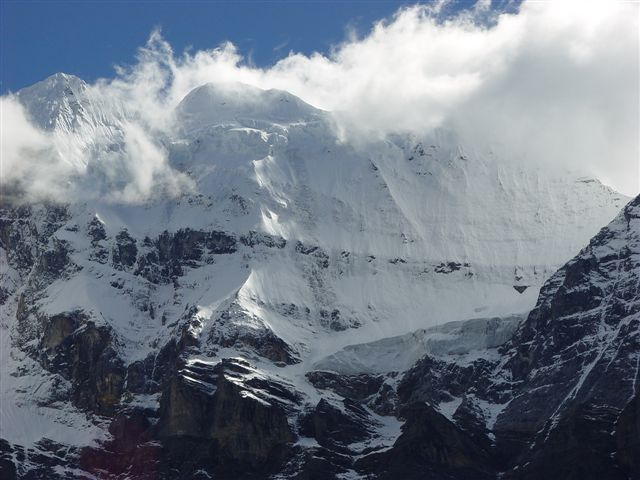
[Similar photos]

Tibetan village lying in the valley between Riwa and Daocheng. The tough road is winding among the green mountains and the brook is singing all the day - it is completely another world for the Tibet residents. Pay attention to the unique Tibetan architecture.
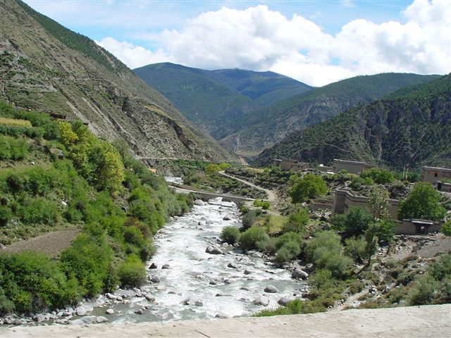
[Similar photos]

An old woman in Riwa. She is 81 years old and speaks Tibetan. She is so nice and greeted us with simple Mandarin.
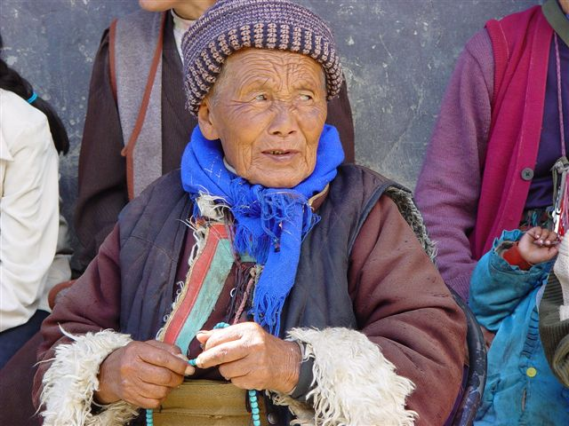
[Similar photos]


Snow fields on Haizi Mount. We marched through two different seasons in that day, from hot summer to icy winter. The black lines are the road winding among the moutians.
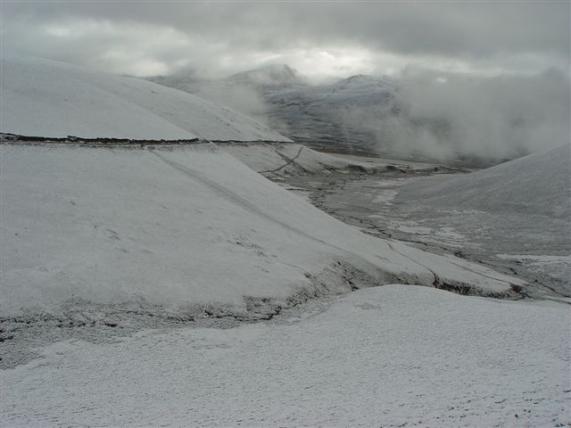
[Similar photos]
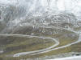 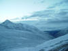 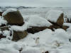
The night of Litang County. 3,900 meters in altitude, it is the highest settlement in the world. It is a pity that we did stayed there.
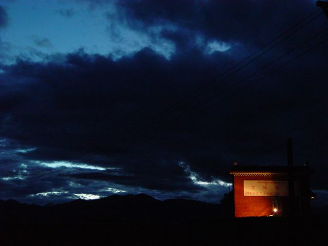
Chonggu Temple, on the half way from our Yading base to Luorong Mount.
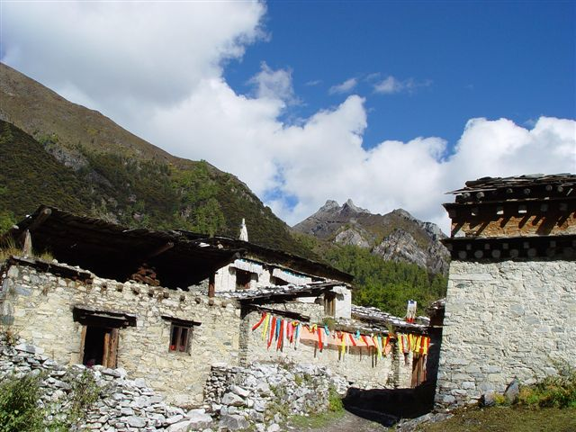
[Similar photo]

Spraying flags on the top of the mountain...
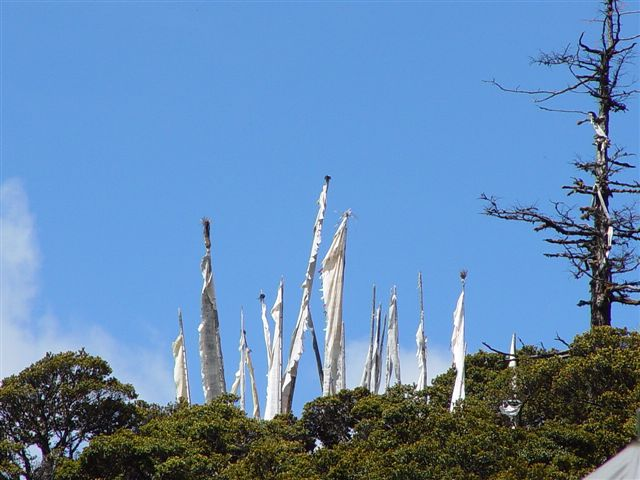
Black and white - like a Chinese paint. Look at the mountains hanging on the sky.
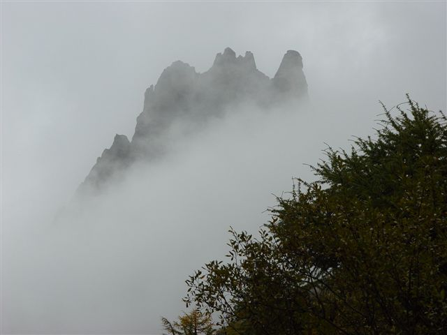

Lake Pearl

[Download
wallpaper version (1280x960) for this picture]
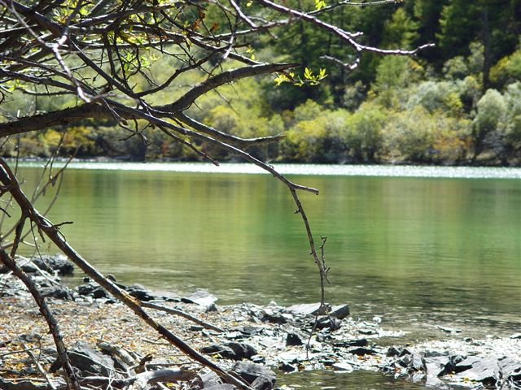
Snow capped peak of Mt. Yangmaiyong with an altitude of 5958 meters (19,542 feet). It looks like a spear pointing to the sky. It is breathtaking when you see it by your own eyes.
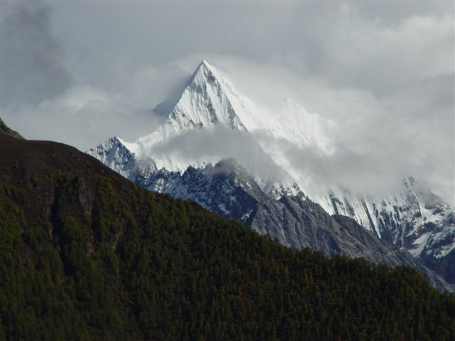
[Similar photos]

{kind=link}
{kind=link}
{kind=link}
{kind=link}
{kind=link}
{kind=link}
{kind=link}
{kind=link}
{kind=link}
{kind=link}
{kind=link}
{kind=link}
{kind=link}
{kind=link}
Sprayer flags and stacked stones

{kind=link}
This kind of sceneries - mountains after mountains, grass after grass - are along the 1000+ kilometers 318 Chuang-Zang Highway.
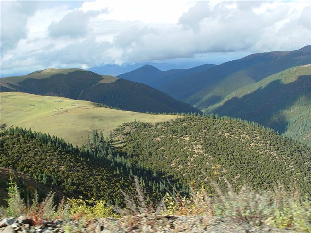
[Similar photos]
{kind=link}
{kind=link}
Baddish in the Chonggu Temple, showing the best wishes to his guests.
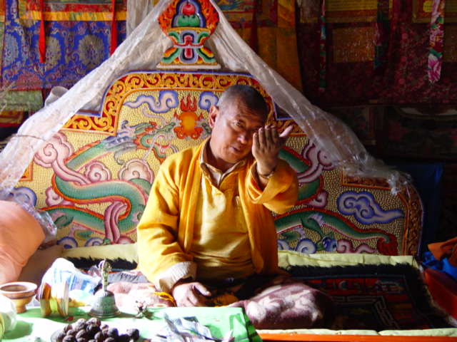
[Similar photo]

It is the first time I steps out of the bus to breath the fresh air of Mt. Balang. It is about 4,600 meters high above sea level. I felt headache there - the effect of altitude sickness. In the high land, I have to walk very slowly.
[Similar Photo]
{kind=link}
{kind=link}
Trees and mountains near Daocheng. It is said that the wood extends to about 5 km.
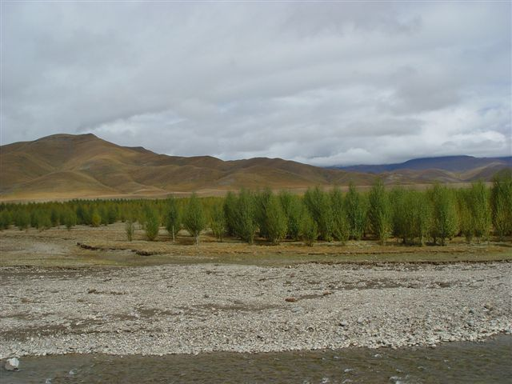
On the way back from Daocheng to Xinduqiao. The mountain is covered partly by snow.

Brook running and singing along the valley of Yading.
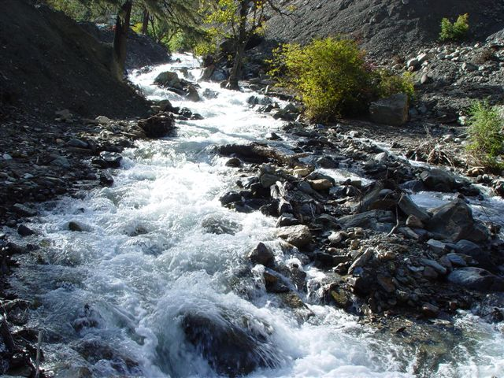